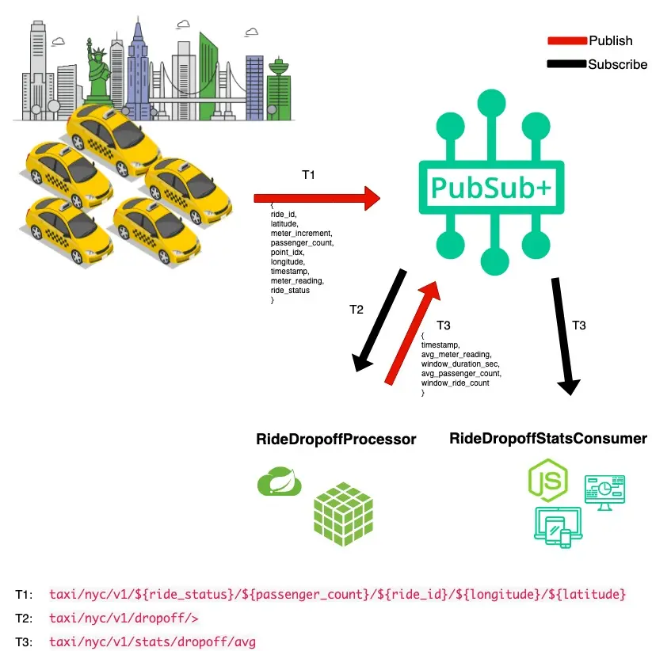

Are you looking to discover, visual, catalog, share, and reuse your Kafka event streams, but don't know how and or where to begin. Or does your organization look something like the picture below and you are struggling to understand what is the data that is really going through your Kafka clusters?

Well you have come to the right place, and in this guided walk through, we will show you how to:
- Run a discovery scan on a Kafka cluster
- Upload the scan to PubSub+ Event Portal to visualize the results
- And finally take action on your Kafka consumer groups and topics by linking them to applications, organizing them in a domain, sharing and collaborating on the data with your teams
We expect with this knowledge you will be able to scan your own Kafka clusters to discover new event streams or consumer groups you may not be aware off.
To make this walk through engaging and meaningful, we will make use of a real-world use, which we will jump into a bit, and ask you to transport yourself to be an employee of a new company. We also cover some foundational concepts so we all aligned on the same page.
So let's get started!
You are a member of the engineering team at the NYC Modern Taxi Co, a fictional taxi cab company based in New York City. Your team is playing from behind and racing to catch up with technology innovation introduced to the industry by Rideshare competitors such as Uber and Lyft. In order for the company to survive and eventually thrive your team has convinced the board that transforming the companies' IT systems is of utmost importance. Your team has done it's research and determined that moving to an Event-Driven Architecture is essential to future rapid innovation and has already kicked this initiative off by deploying a Solace Event Mesh and updating the taxi fleet to stream real-time events that include ride and location information. We know what the fleet is up to! Now it's time to start to continually improve and provide a world class customer experience.
In order to react in a real-time manner the team has decided that we want to process the updates as they stream in from the fleet of taxis instead of putting them directly into a datastore and then having to retrieve them to do processing later. To prototype this work, you'll see a high level design in the diagram below. Since we already have the taxi fleet streaming their updates into our PubSub+ Event Mesh we need to do three things:
- 🚖 Capture this high level design in the PubSub+ Event Portal where we can define our Event-Driven Architecture, including its' components: Applications, Events and Schemas. This will allow us to define the details needed to implement, visualize and extend the architecture as it evolves, and share/collaborate with our entire engineering team as we continue to innovate.
- 🚕 Next up we're going to create the RideDropoffProcessor microservice which will subscribe to the stream of dropoff taxi updates from the fleet, capture events for a specified time window (we'll use 20 seconds to make it easy), calculate the averages, and publish a new RideAverageUpdate event for each window.
- 🚖 Lastly we'll create a RideDropoffConsumer that receives the stream of RideAverageUpdate events and captures them for display and further processing.

Before we dive deeper, let ensure we are all aligned with Kafka & PubSub+ Event Portal objects and concepts we will use.
Consumer Groups
TODO: What are consumer groups?
Topics
TODO: Kafka topics vs Solace topics?
Schemas
TODO: What are schemas?
Application Domain
TODO: What are app domains?
Applications
TODO: What are applications?
TODO: explain the support Kafka versions, and other things required to run the agent
Provide the Pre-canned scan file here if users are to skip scanning a kafka cluster.
Creating an App Domain
Linking Consumer Groups to Application
Linking Topic to Publishers
Making Links Across App Domains
Commit to Event Portal
Summarize and key takeaways
✅ < Fill IN TAKEAWAY 1>
✅ < Fill IN TAKEAWAY 2>
✅ < Fill IN TAKEAWAY 3>
Next steps -> scan your own clusters